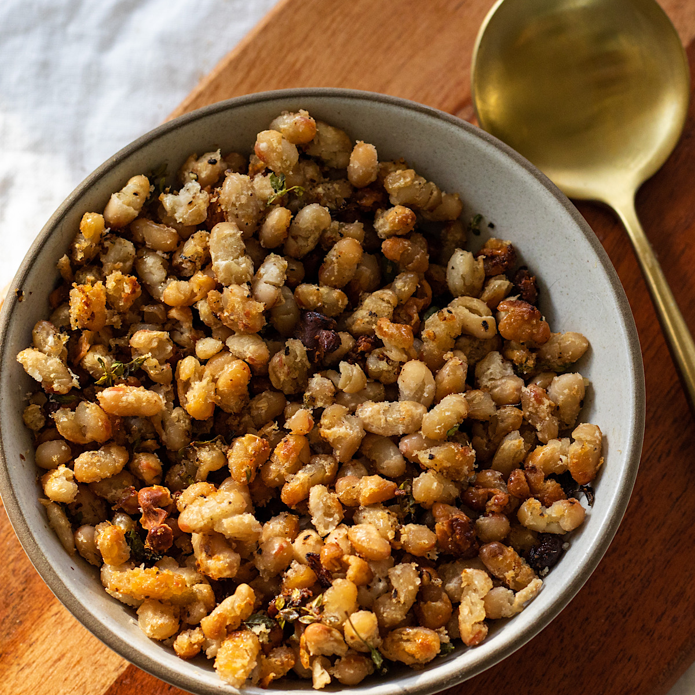

public/sample.jpgUnsplash: "white beans skillet"
From Mise · Nº 61
Crispy white beans with lemon & garlic
This is the one I cook when I've got nothing left in me. Beans crisp up in a hot pan while the garlic goes golden, then everything gets a squeeze of lemon and a fistful of whatever green is wilting in the drawer. Ten real minutes of work.
SHOPPING LIST
2 cans white beans · 1 lemon
4 garlic cloves · chili flakes
1 bunch greens · good olive oil
2 cans white beans · 1 lemon
4 garlic cloves · chili flakes
1 bunch greens · good olive oil